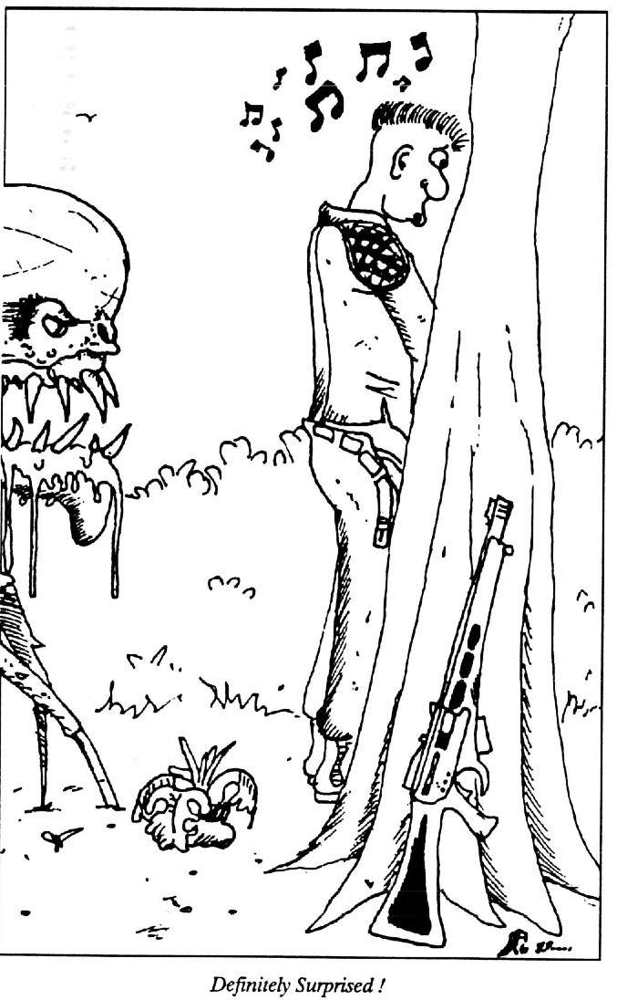
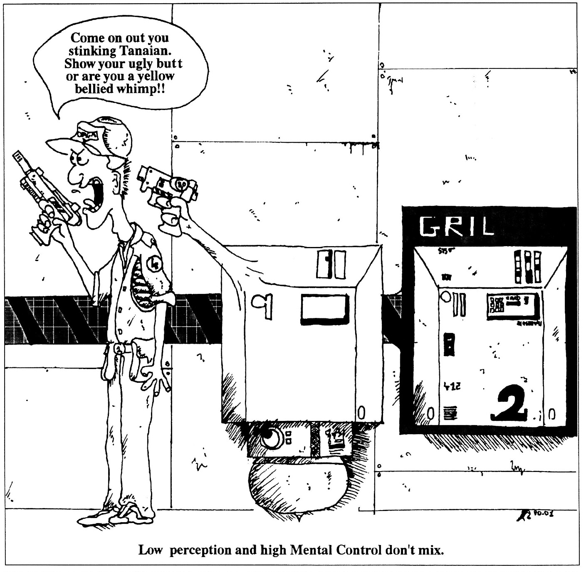

Hand to hand vs. Weaponry combat
It could be said that the two kinds of combat are the same, but the quintessential difference is how the weapon is used. In Hand-To-Hand combat is when two or more characters are fighting with their bare hands or with objects in their hands. The objects they hold are not thrown but used to cut or bludgeon and remain in the hand. This combat includes the use of all martial arts such as Judo, Karate, and other small hand held weapons such as beer bottles, knives, chairs and other weaponry commonly used in barroom brawling, for instance. In weaponry combat, combatants can use any weapon as long as they do not come in direct physical contact with the target. Therefore all projectiles, ranged weaponry and thrown weaponry fall into this category. Representative weapons are a bows, all firearms, and anything thrown (including of course beer bottles and small bar-room patrons). NOTE: Hand-To-Hand weapon or discipline, like fisticuffs or martial art attacks cannot be made at over three meters. So if a combatant is over this distance from his target and wants to use a Hand-To-Hand weapon or disciplines, he or she must first move (walk, crawl, jump, etc.) inside of the distance before he or she can attack. Latagrea is included in the weaponry category of combat.
Teams and Individuals
There are advantages and disadvantages to being part of either, a team or a single player. Large teams are usually a little on the noisy side while a single person can be very stealthy. An individual is however vulnerable to an attack from a team because his efforts are divided between many, while theirs are concentrated on one. Beyond this difference they share a common distinction - in that - each is called a "SIDE". A "SIDE" is any number of characters that are trying to accomplish the same objective. This aids in explaining the rules of combat and can help the Game Master understand it's flow. NOTE: When performing a calculation for a group, use their collective average for any attribute or skill instead of the individual's score. This, however, applies only when the group is acting as a whole - i.e. in Surprise or Primary attack as a group. If an individual, in a group, is firing a weapon or wants to take action, use an individual score.
Combat Flow
In a realistic combat situation everyone acts at once, the opposite sides all move simultaneously in no fixed order. Now obviously this situation must be controlled so the Game Master can handle all of the player's requests, because if all of the players from all of the sides, began to yell their actions at the Game Master all at once ... well you can see that the Game Master would have no hope of understanding any of them. Therefore a few rules must be established so that the progression of combat can be simplified and it's flow controlled. Although these rules indicate that there is a fixed order in which characters move (in turns), the carnage still unfolds in the haphazard and unordered form that is realistic. The turns, rounds and other rules simply help the Game Master and players to visualize the conflict, blow by blow.
Turns and Rounds
All the action and movement possible during an engagement is far too much to think about all at once. Therefore it is separated into smaller parts called Turns and Rounds. A turn is the time it takes for a side (group or individual) to expend all of their Agility Points. (typically about five seconds). Each player receives only one turn in which he or she can choose to take action and have the character perform any desired movements. The order of these turns between members of the same team or side can be decided upon by position or marching order, by mutual agreement or by the roll of the dice. While the order in which each side attacks is dictated by the rules of Surprise and Primary Attack. Each player is free to specify what moves he or she wants his character to make, when it is their turn to take action. When every player from each side has had a turn, that length of time is called a Round. The whole engagement is composed of as many rounds as is necessary for the combat to be resolved and ALL teams or sides perform all actions in the same Round. It is very important to realize that All characters start their moves at the same instant. Therefore if one player executes a jumping side-kick in his turn, his target may have ducked, leaving the character sprawling through the air and on his way to a hard landing. The two moves are declared at different times but happen all at once, and the players must realize this to plan their moves effectively. Otherwise they could find a solid brick wall where the target's head used to be. OUCH! The Round and the Turn are guides to the Game Master and as such barely have meaning in real time. The Round, however, is an exception. Each turn takes approximately five seconds to complete, and since all the turns occur simultaneously, a round is also complete at the end of five seconds. So every time the sides have moved, a round has passed, approximately five seconds of game time have passed. Luckily - we usually won't deal with the actual time involved, we will simply say that a round has passed.
Combat Sequence
The sequence which combat follows consists of steps that a Game Master and the players perform when a character is in a combat situation. These steps - and the order in which they are to be completed - are listed below.
- Check For Surprise
- Primary Attack
- Action For Each Player
- Percent To Hit
- Damage
- Repeat Steps 3 - 5 For Each Side
- Repeat Step 6 Until Combat Is Resolved
› Surprise
When an attack is initiated and the target is not expecting, he or she is said to be surprised. This means the side with SURPRISE receives the one and only turn this round - no other side may take action. The other sides are caught with their pants down - so to speak - and cannot retaliate. From a group's actions their ability to notice an attack coming can be determined, this is called their ALERTNESS CONDITION (AC). As the Game Master you decide on the group's Alertness Condition from # 5. Listed alongside each Alertness Condition is an Alertness Percentage. These are used to modify the Perception of characters who, because of how their acting, can miss the signs of an attack. So if a character is being loud, careless or is not paying attention, he or she will be more likely to be Surprised by an attack. Since all characters on a side act as a whole, one 'bad' player can also louse up the chances for his team to see an attack coming. This rule only applies if the group is acting as a whole conscious, if some of the group is sleeping this does not degrade the chances of the character on guard. The second factor that effects if a side gets Surprise or not is the amount of damage the side has taken the proceeding rounds, this can be determined from Table #3-7.0 (See Damage) and it is simply added to the 1:100sd die roll before the comparison. If the combatants lose sight of each other, any one of these procedures could be used to determine who gets surprise. The present values for AC percent would be used in the calculation (AC can change from turn to turn, and "PRESENT" simply means the character's current value). If a player is attacked, his alertness condition will always jump to a higher level in the next turn. The characters alertness condition may not jump all the way up to the highest condition "combat", but it will always increase. The amount of this increase is up the Game Master to determine depending on how disturbing the bazooka, it is almost impossible to not notice an attack from one, while the sting ray, a sniping pistol, is actions or noises of the attack were. A good example is a almost totally inaudible and therefore very easy to miss. Depending on the player's conduct this condition may return to the original low level or remain high. This is also for the Game Master to determine.

∴ Procedures - a
- A simple attribute check is performed for each side. All sides roll 1:100sd and try to beat (roll under) their PERCEPTION. The side which rolls the least above, or the most below their Perception gets SURPRISE.
- A side gets SURPRISE if they can beat the average of their Perception and their ALERTNESS CONDITION PERCENTAGE. Assign one AC for the whole side and average its percentage with the side's Perception. Then have all sides roll 1:100sd (NOTE: Add the damage modifiers (from Table #3-7.0 See Damage) to the roll - the side which is least above, or the most below the average gets the SURPRISE attack.
- Assign each individual his or her own AC, then average this with the individual's Perception. Further average all of a side's values to get its percentage. Again have each side roll 1:100sd and the one who beats this percentage gets the Surprise attack.
› Primary Attack
Primary attack is simply who has the first attack for that round, and has only one other advantage. If your roll is 30 percent or more above that of the next highest side's roll, then your side gets the one and only attack this round. The significance of this is that if a side is fortunate and gets a couple of good rolls they can have multiple consecutive attacks before the other sides attack for the first time. Any side which receives Primary Attack can opt to "pass" this attack, and act or take action last. This allows the side to either have a first strike in hopes of disabling an opponent - or a last strike with the advantage of knowing the other combatants' positions, maneuvers and results. If a side with Primary Attack "passes", the established order of attacking is shifted forward. The second attacker now attacks first, the third combatant now goes second, and so on for all sides involved in combat. Right at the end is the side who passed.
If a side or an individual wishes to join a fight already in progress, they must first be assigned their order. It is determined using the same procedure used to order the original combatants. The new side's turn may be added on at the end, beginning or even in between the original combatants' turns. However, he or she, will have to wait until it is their turn before they can attack. If at any time the results are equal - no one team or individual receives Primary attack - a 1:100sd roll for each side should be repeated until the sides are assigned an order. If a side or an individual wishes to join a fight already in progress, they must first be assigned their order. This is determined using the same procedure used to order the original combatants. The new side's turn may be added on at the end, beginning or even in between the original combatants' turns. However, he or she, will have to wait until it is their turn before they can attack.If at any time the results are equal - no one team or individual receives Primal attack - a 1:100sd roll for each side should be repeated until the sides are assigned an order.
∴ Procedures - b
- Each side rolls 1:100sd (NOTE: ADD any damage modifiers from Table #3-7.0 if applicable) then compare the results. The side with the lowest roll will get Primary attack or attack first, the side with the second lowest roll will attack second and so on until each side knows when it is their turn to attack. Only perform this step ONCE at the beginning of combat and the combatants attack in that order until the engagement is resolved or broken-off.
- Perform procedure number one at the beginning of each round. So that one team may go first several rounds in a row.
› Action
A player can make their character perform any action that is desired. The number and type of these actions are only limited by the player's imagination and the character's supply of Agility Points (APts) . Any action that a player wants his character to perform has a cost in Agility Points that the player must "pay". Some of the actions possible are listed along with their costs in APs on Table #3-6 and since no table is big enough to contain all the actions possible, only the primary and most basic moves have been listed. If a player wants to execute a maneuver not listed, you as the Game Master, should interpolate the cost of the desired move, considering which no more actions can be made. So, if a player performed a jumping side kick which exhausted all agility points, he or she would continue until the motion of that move had finished. the ones that are listed. The player can continue spending agility points until they are all spent, after Actions can be made in any order or combination and against as many opponents as the player wishes, as long as the player has enough APs to cover the combined cost of the moves. A character takes approximately Ω second, of game time, for every 10% of his agility points he or she expends. One should see that if a player expends 100% of his or her agility points, it will take approximately 5 seconds. Any player expending all of their agility points will take this amount of time regardless of race, Agility or Physical Strength. This means that an Aracnian can expand his average number of agility points, 345 in the same time it takes a human to consume his 50. This indicates that the races move at different rates and is quite obvious when you consider their varied physical structure.
– Deci-%age Turns
Turns can be broken down to help the players visualize their movements and allow the Game Master a better understanding of each character's actions. A good way to do this is a so-called "deci-percentage system". Divide the length of a round and the character's agility points by ten. The results will have the character expending one tenth of his agility points in one tenth of the time. Treat each of these pieces as you would a whole turn checking for Primary attack and the other steps of combat each time. This gives a very precise picture of combat as it progresses. Other conveniently sized pieces to cut the whole into are 25 and 50 percent chunks. If you like you can go smaller but remember it will always mean more work and not necessarily a clearer picture. Try to visualize two characters fighting. They are doing all kinds of hand to hand and weaponry actions. How do you know where the characters are relative to each other? Which one finishes their jumping side kick first and how far is the player who is still in the air? This is vital knowledge when two characters are interacting. How can you fight someone if you don't know where they are? With the deci-percentage of APs and turn length we can find out where the characters are in relationship to each other very simply. Because all the motion is compartmentalized into easy to visualize, slow-motion sections.
– Added Twists
Optionally, and for additional complexity, the players can "borrow" agility points from their next turn if they really find themselves in a deadly situation. When points are borrowed the rate is 3:1, that is if three points are borrowed from the next turn, then one additional point can be expended in this turn. Consequently, the player has three less agility points in the next turn. Any number of points can be "borrowed" as long as the next turn has enough points to cover it. If the player borrows all of the agility points their character can have no movement in the next turn and is not allowed to borrow again until the no- movement turn is finished. The amount of damage a player has taken is a factor in Agility Points so consult Table #3-7.0 to find the total modifiers due to damage then simply divide by ten. This is the number of agility points the character losses due to the stunning effects of taking damage. Once the character has recovered from the stun of taking damage he is no longer affected, he must still heal the damage but the initial shock has worn off. The character can only move when he is no longer stunned, which could take as few as one turn or as many as fifteen. If the number of APs the character loses is greater than the number he has, he must take a NO-MOVEMENT turn, ie. the character is allowed no movement this round. These NO-MOVEMENT turns will continue until the character has "paid-off" the debt.
∴ Procedures - c
- For simple combat ignore the calculation of APs and just use your discretion as to whether a player has moved enough.
- Let the player expend their points as per Table #3-6 when it is their turn. Where the actual amount of APs are as calculated in Character Generation
› Percent to Hit
At this stage the type of combat, either Hand To Hand or Weaponry, comes into play. The difference stems from the different skills that are required by the two types of combat, and effects the calculation of MARKSMANSHIP. Depending on how the weapons are used, described above in HAND TO HAND vs. WEAPONRY, the representative skills should be used to calculate the character's MARKSMANSHIP or BRAWLMANSHIP. The value of a marksman's skill for Hand to Hand combat is the average of the character's BRAWL attribute and an ATTACK DIFFiculty modifier. The ATTACK DIFFs can be found listed next to their respective attacks on the character's DATA SHEETS. The value of a marksman's skill (MARKSmanship) for weaponry combat is the average of the AIM attribute and the WEP DIFficulty modifier. The WEP DIFs can be found listed next to their respective weapons on the DATA SHEETS. NOTE: Since Hand to Hand combat can only occur under three meters you should double check the range. So you can warn the player that, if he or she is more than three meters away from the opponent, a jumping side- kick will not only look ridiculous, it will fail miserably too.
BRAWLmanship = ( BRAWL + ATTACK DIF ) / 2
MARKSmanship = ( AIM + WEP DIF ) / 2
∴ Procedures - d
- If the player rolls 1:100sd and the result is under their MARKSmanship then they have hit. 2: Look up the player's MARKSmanship versus range on Table #3-1 and have the player try to beat it by rolling under the value on a 1:100sd. 3: Look up:
- the value for MARKSmanship vs. range as in procedure NUMBER TWO
- the ADVERSITY MODIFIERS from TABLE 7.0 - 7.4, of any environmental and movement conditions that may exist. Then find the Percent Against from Table #3-2.
- Now subtract the value of the Percent Against from the Percent to Hit.
- if the result is positive the player has hit!! Have the player roll a 1:100sd
- If the roll is more than 20 under, the result it is a direct hit. The player hits exactly where he or she wants. Now go to the next step DAMAGE
- If the roll is less than 20 under, the result is a random hit. The exact body part that is hit is determined on the RANDOM HIT Table #3-3.4.
- if the result is negative the player has missed. the range and or the adversity modifiers were to much for the player's skill to overcome.
- GRENADES & EXPLOSIVES - Roll 1:100sd
- You roll under character's brawl attribute. This means you hit exactly where you wanted and right on target.
- You roll less than 20 over brawl. Check the Grenade bounce Table #3-4.1 to determine the number of bounces and the grenade bounce chart to determine where the grenade or explosive lands.
- You roll more than 20 over brawl. The grenade or explosive misses! The distance the grenade or explosive lands is 1:10sd + 13 meters away from the target hexagon.

› Damage
Like any other step this one has several procedures or routes that you can choose. The various steps range from simple and generally informative, to complex and very specific. Procedure number one is the simplest form of damage calculation used in COMBAT. It has simple descriptions to inform the player and Game Master of the damage done. This damage calculation is simple and fast so if you don't need or want specifics, then use this procedure. The second procedure relies solely on dice rolls to determine number of points of damage. Finally the third procedure is the most precise and uses tables to obtain it's results. Between these methods the only variable is the level of complexity that the procedure entails. Each successive procedure is a little more complex and therefore a little more difficult to use. However, all three share some quintessential elements that effectively link them together into a single name system. DAMAGE TYPE, which is present in both the first and the third procedure, specifies exactly what the implies - what type of damage the weapon in question inflicts. That is - were you using a laser rifle or, a club to attack the carnivorous plant dragging you towards its' mouth (damage types are listed with their weapon on the DATA SHEETS). The element that procedure two and three share, lies in the result which they yield. It is a very undescriptive number - which is the number of damage points that were inflicted on the target. The disadvantage is, only a person very familiar with the system could get an accurate idea just from this. The advantage is that a number from 1 to 5000 is much more specific then grouping all possible damages into only fifteen categories. Other role players, who are new to role playing or are unfamiliar with this system, will probably want more description, at least until they become acquainted with the system. Those who want more description will find it in the DESCRIPTION section below. Which is structured to use the results of any of the procedures in Damage, to add a great deal more description. This system has functionality as its major emphasis. Meaning that all of the points of damage that a character has taken, describes that character's function. When he or she has no more damage points left in a body part he or she has no more function in that body part - its' as simple that. No function means that body part is totally useless, so if it was a hand, the fingers would just hang limp, and if it was the heart, it would no longer function. So the effects of losing all of your damage points in a particular body part can range from being inconvenient and painful to life threatening. Note, there are 10 unrecorded points of structure before the points of function listed on the character sheet. These structure points are lost when a player becomes damaged and can only be recovered by natural healing. So, even if the player receives the best of medical treatment possible, genetic surgery, there is still some damage that must be healed by the normal healing process. These points all structural and therefore do not affect the players' functioning. Total destruction of the body part occurs when it has taken five times the number of points the undamaged body part has. So the average hand with its' 6 points is totally destroyed when it has received 5 x 6 or 30 points of damage. The same calculation follows for all other body parts on all other races.
∴ Procedures - e
The first fact you must know is the DAMAGE TYPE of the weapon, this will tell you which table you should look to for the description. Next you must know where the damage was done. This can be specified by the Game Master or rolled for on the Random Hit table #3-3.4. With this data you can find the damage done to the effected area or body part. Damage is referenced by a Title to a description on Damage type specific tables, those numbered 3-16 through 3-21. Each damage type has its own table due to the differences in damage done by the various weapons.
Beside each title on the table you will notice two other columns. These other two elements are a SEVERITY ROLL and the DAMAGE PERCENTAGE. The severity roll tells you which severity table to roll on to determine the full consequences of the damage taken. This process can be done very quickly and hardly affect the flow of the game. The damage percentage relates an approximation of the damage taken as a percentage of the total points in that particular body part for use with an even larger description laid out in TABLES 3-8 through 3-14. The second element only comes into play when a wound has been left untreated for an extended period of time. If this situation exists simply roll on the 1:10sd and look up the appropriate title on the table and it's description. This description should clear up any questions the player might have.
You will notice that the descriptions are not body part specific due to all the useless repetition that would be needed. Game Masters should use discretion to customize the descriptions. If the player are experienced, have them do the rolling and give them the descriptions to read. This can free-up your time and efforts to deal with the elements and flow of the module and still run combat.
Determine what type of damage is being done.
On TABLE #3-3.4 Random Hit Tables select the appropriate column for the particular race. Then have the player roll 1:10sd and follow the instructions on the table.
Find the appropriate table from those numbered 3-16 through 3-23, depending on damage type, and have the affected player roll 1:10sd then look up the damage description.
A simple way to figure out damage points done is to use the DAMAGE DIE ROLL listed beside each weapon on the DATA SHEETS. The result of the DAMAGE DIE ROLL is the number of points of damage that the target has taken. It is recommended that this procedure only be used if the range is less than ten meters. While, the procedure will work for ranges above ten meters, above that distance the results begin to lose accuracy, and these inaccuracies should be kept in mind. usually in the form (X+Y). The key to this is that the first number This DAMAGE DIE ROLL is abbreviated to save space. The abbreviation takes the form of one or two numbers (X) is the number of times you should roll 10sd (X:10sd). The second number (Y) is the number of points you should add to the die roll. Therefore you get X:10sd + Y which is the DAMAGE DIE ROLL. In the case of a fractional (X) values roll 1:10sd and multiply the result by the fraction. If no (Y) value is present then there is no addition and the damage done is just the result of X:10sd.
EXAMPLE
AUTO PISTOL 4+2 means 4:10sd+2
CONTOUR LASER 3 means 3:10sd
FINGER LASER ½ means 1:10sd * ½
You must know the range that the marksman is attacking from. The only other fact you need is the WEP MODifier. WEP MODs are listed alongside their weapons on the DATA SHEETS. To find the number of points of damage done to the target, cross reference the WEP MOD and the RANGE using Table #3-3. The resulting value is the number of points of damage that have been done to the target. NOTE: Do not confuse WEP MODifier with WEP DIFficulty modifier they are two separate modifiers.
– Grazing Shots
After completing procedure one or two you now know how many damage points can be done by the attack. That's right "can" be done, because the above damage calculation does not account for how well the marksman hits, only that he or she does. This calculation remedies that situation. To make the damage points taken more accurate you must know the PERCENT UNDER. PERCENT UNDER is the percent to hit or marksmanship minus the 1:100sd ROLL that the player rolled when he or she was trying to beat their marksmanship or percent to hit.
% UNDER = {MARKS or % TO HIT} - 1:100sd ROLL
Take this percentage (the percent under) and divide it by the marksmanship or percent to hit depending on which procedure was used in the "Percent to hit" section. This should result in a number that is less than one. Multiplying this number with the number of damage points that could have been done to the opponent will result in less than the original number of damage points. The modified number of damage points now reflects a more accurate value, because any inaccuracies in aiming that affected the placement of the shot have been compensated for.
– Description
Damage description tables, numbered 3-8 through 3-14, have been set-up to aid a Game Master in describing to his players the kind and severity of damage they have taken and or given. Even though these tables add greatly to the damage description they are not specialized to the various anatomies of the different races after all sometimes you have to ad lib that what Game Mastering is all about. These additions should be made from your knowledge of Physical structure comparisons between the different races. You should also note that there are 20 categories of damage on all of the tables, and the actual damage percentage may fall between the upper and lower limit of any one category. Since the descriptions are the average of a range of damage done, the most applicable "end" of the description should be chosen. If the actual damage percentage is in the upper end of the percentage range the damage description would be more severe, but if the damage percentage was in the lower end of the category the description would be less severe. These additions are an option the Game Master can use or disregard depending on the accuracy or description his role-players want. To use these tables there are a few things one must know, what type of damage does the weapon inflict (DAMage TYPE) and how many damage points does the affected area have (DAMage points). The type of damage that a weapon does is listed beside it on the DATA SHEETS. DAMage points are assigned during character generation (See Character generation: damage record) and are also on your character sheet in the DAMAGE RECORD. You must know the damage percentage to know which description to look at. This can be simply calculated by dividing the number of points taken by the total number of points in the area when undamaged and multiplying by one hundred. The number of points TAKEN could be the unmodified number derived in "DAMAGE" or it could be the modified value calculated in the "GRAZING SHOTS" section. These descriptions are written for races with endoskeletons, all but three of the races in the known galaxy. The descriptions for these other three races the Aracnians, fenbin, and Sooaacoli must be altered so that the bone descriptions come first instead of last - as in the other races. These alterations should be performed by the Game Master using the existing descriptions. This modification will produce a properly ordered sequence of descriptions for races with exoskeletons.
DAMAGE PERCENTAGE = points taken
____________
total points
With this percentage and the damage type you can now look up a large specific description about the actual damage done. The damage type will tell which of the tables, labeled Table #3-8 through 3-14, to use. Then just look up the Damage Percentage and read the description in the box. For more description about the extent of the damage you can read the Additional Descriptions. This means that after you read the description indicated by the damage percentage look up the table (down the percentages) until you reach the most serve description in the last type of damage. For example if using Table #3-8 and you began reading at the 86-90 description you can also read the 81-85, 61-65 , 41-45 and the 11-15 descriptions. The reasoning behind this is simple - when a sword breaks the bone, it must first damage all the flesh surrounding the bone - and so the previous descriptions apply. You can continue reading the AD descriptions until you reach the top of the table. All of these descriptions would relate the sum total of all of the consequences of the attack, and all of the descriptions you could read on that particular injury.
› Organ Damage
This ia an advanced system for determining the damage done and the effects to the critical organ systems. The organ systems that are covered in this are circulatory, Respiratory, Nervous - Endocrine, and digestive - excretory. Organ system damage leads directly from the tissue damage system and description. The essential part of the tissue system is the percentage damage done, this percentage is used to find out the severity of the organ damage. There is an obvious need to modify the damage to the body part and what organ system is being affected, because Respiratory damage in the foot is improbable. Table # 3-3.1 shows how the damage percentage should be modified to organ system and body part. Simply multiply the tissue damage by the correct column and row of the table. The result of this calculation is then looked-up on the appropriate organ system damage table #3-15.1 through 3-15.4. The results of the damage can be determined from the descriptions. Organ system damage descriptions and table values are calibrated to any race that has it head and brain on its shoulders. For other races place the damage to head where this particular race's "head" is (in their chest for the Eebek and Krane). There is one further exception for the Aracnian's and Eebek's decentralized circulatory and respiratory system, they simply take all their damage over their entire body, evenly distribute the damage to these sections. With all the other body parts and organ systems as the first table including the as per A sections above. You check damage each organ system affected determined by the race's physical structure and whether the affected body part is found in the race.
– Poisons and Drugs
Contrary to weapons and attacks, poisons and drugs only affect organ systems and usually no tissue damage is done. For this fact their damage is discussed with exclusively in this section. Each type of poison and drug effects a different system, also different doses of a certain poison or drug can cause different effects. A small dose of a particular poison can temporarily slow nervous system of human, while a larger dose is deadly - this is Kurari. Other more exotic drugs can affect the digestive tract, circulatory system and respiration. The types and sources of these various drugs are endless and so are their effects. A Game Master should decide which system(s) the chemical effects and its weapon modifier (WEP MOD). Then The WEP MOD can be put directly into the calculation for damage since percent to hit is not usually a factor (ie. the poison or drug is ingested,injected, etc.). The calculation will yield a number of tissue damage points which are ignored but the value is then used to calculate the organ system damage as laid out above. Any poison can be used as long as it effects one or many of the systems and it can be assigned a WEP MOD.
Conclusion
We hope that you find these rules clear and easy to use. That you use only those rules that you and your players enjoy using and ones that fit your style of gaming. We hope that if you have any questions that have been answered by the pertinent examples for the various procedures. Finally have fun using these rules, select the ones that you can have fun with not the one that drag you down - after all this is supposed to be a game and it's supposed to be fun!